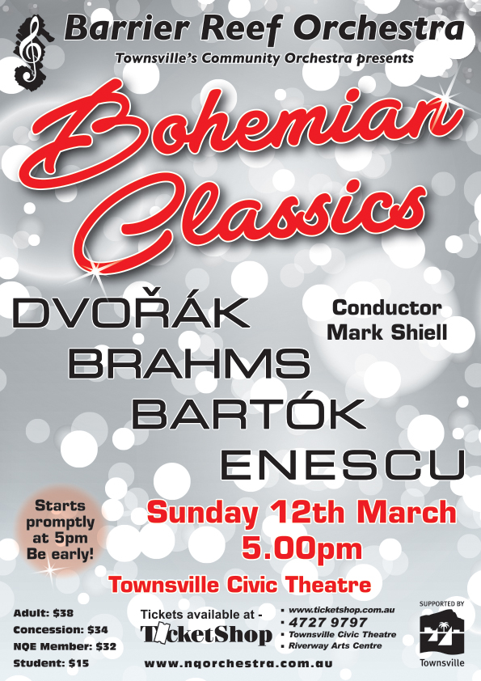

Guest Conductor:
Mark Shiell

Guest Conductor:
Mario Dobernig
| Conductor: | Mark Shiell |
|---|---|
| Conductor: | Mario Dobernig |
| Program: | |
| Antonin Dvorak: | Slavonic Dance Op. 46 No. 8 |
| Johannes Brahms: | Academic Festival Overture Op. 80 |
| Bela Bartók: | Romanian Folk Dances Sz. 56. |
| George Enescu: | Romanian Rhapsody OP. 11 No.1. |
| Antonin Dvorak: | Symphony No.8 Op. 88 |
| Concert Master: | Stephen Frewen-Lord |
|---|---|
| Rehearsal Conductors: | Suzanne Darrigan & Andrew Ryder |
| Orchestra Manager: | Sally Frewen-Lord |
| Violin I: | Stephen Frewen-Lord (leader), Kimberly Riskas, Elena James, Emily Robson, Annette Beck, Jacalyn Adcock, Stacey Lun |
| Violin II: | Paul Allen (leader), Ellen Conrad, Ziying Ni, Samantha Czech, Suva Leitch, Sophie Gregory, Emily Macdonald, Vicky Hultgren, Amy Schmidt |
| Viola: | Aidan Fitzgerald (leader), Emily Matthews, Lilyann Conrad, Jacqui Lau |
| Cello: | Wade Tattersall (leader), Carole Radovanovic, Jack Camp, Una Glavin, Arabella Campbell, Margaret Loftus, Rebecca Marki, Sophie Wark, Michelle Heijneman |
| Bass: | Olivia Adcock, Stephen Kluver |
| Flute: | Shinako Macdonald, Manuela Weilbach |
| Piccolo: | Monika Ortloff |
| Oboe: | Bernie Girard*, Georgina Kanowski |
| Clarinet: | Jacinta Payne, Monika Ward |
| Bassoon: | Sarah Hill, Helen Land |
| Horn: | Andrew Ryder, Annie Doherty, Suzanne Darrigan, Daniel Harley |
| Trumpet: | Arthur Florence, Harrison Murray, Sam Schimming, Jonathan Conrad |
| Trombone: | Emi Miyoshi, Mark Land, Amy Windsor |
| Tuba: | Andrew Hodgson |
| Harp: | Leah Li |
| Timpani: | Noel Price |
| Auxiliary Percussion: | Ruby Ansic, Damien McCluskey |
| * Brisbane |
Guest Conductor:
Mark Shiell
Guest Conductor:
Mario Dobernig